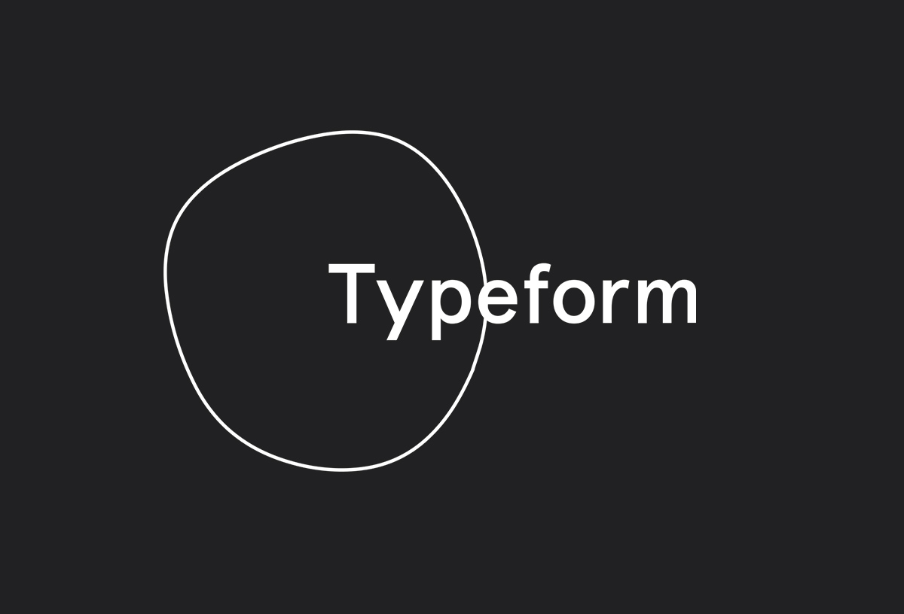

DISEÑO RESPONSIVO
DISEÑO RESPONSIVO
DISEÑO RESPONSIVO

EJEMPLOS
| 1.- Shutterfly Shutterfly es un servicio online que permite a los usuarios crear álbumes de fotos, tarjetas personalizadas, artículos de papelería, etc. Debido a que cada vez más gente utiliza únicamente la cámara de su teléfono móvil, Shutterfly no tuvo más remedio que rediseñar su web par ofrecer una buena experiencia móvil a sus clientes. El menú principal de esta web cuenta con grandes botones para que los usuarios puedan seleccionar rápidamente la opción que más les interesa. Una vez que hacen clic en alguna de las opciones, pueden ver una galería de imágenes de ejemplos con todas las cosas que pueden crear en la web. |
|
2.- Google Maps Puedes utilizar Google Maps mientras caminas, mientras conduces, mientras andas en bicicleta o vas en transporte público. Lo que hace especial a esta web para móviles es que es prácticamente idéntica a su App móvil. Y no sólo se trata de la apariencia y el diseño, sino que cuentan con la misma velocidad de carga y funcionalidades. |
 |
| 3.- Typeform Typeform es una empresa con una simple misión: “crear formularios impresionantes.” Su sitio web de escritorio está muy bien diseñado, ofrece vídeos de alta definición, animaciones y otros componentes de diseño complejos. Pero para los usuarios móviles los vídeo y animaciones podrían afectar significativamente el tiempo de carga de la página, entre otras dificultades. Es por eso que han hecho una versión móvil de la web mucho más simple, pero igual de bien diseñada. |
 |
4.- Etsy Etsy es un sitio web de comercio electrónico donde la gente puede comprar y vender artículos hechos a mano. La mayoría de los visitantes de esta web buscan un artículo específico o quieren navegar por las diferentes categorías de productos. La página web optimizada para móviles de Etsy permite la búsqueda por elementos específicos, tiendas, o categorías. |
 |
| 5.- BuzzFeed BuzzFeed es una empresa de noticias conocida por su contenido viral. BuzzFeed sabe que muchos de sus visitantes acceden a su web a través de su smartphone, por lo que han creado una experiencia de usuario agradable para este tipo de lectores. Cuando llegas al sitio web móvil de BuzzFeed, lo primero que ves es que algunas de sus piezas de contenido más populares se muestran en un formato simple con imágenes de gran tamaño para que puedas seleccionarlos fácilmente con el dedo. Para los usuarios interesados en categorías específicas hay un menú en la esquina superior izquierda de la pantalla que muestra todas las categorías de los artículos. |
 |